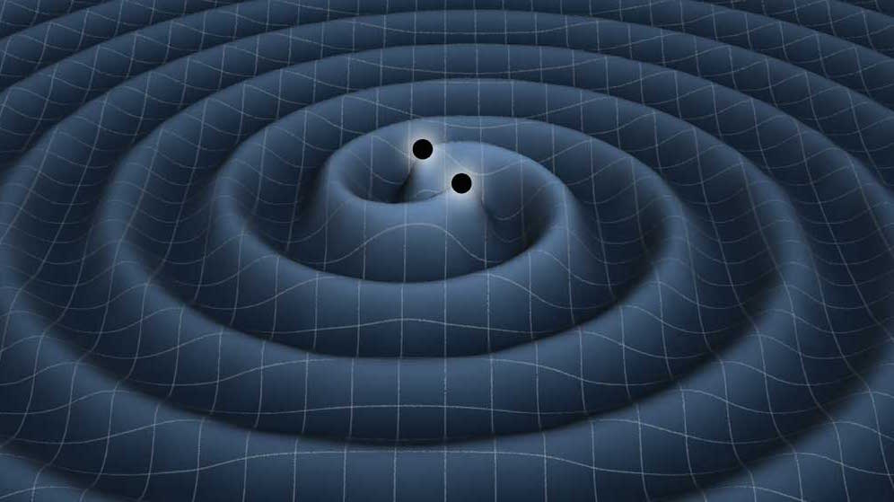

Cette application de science participative (crowdsourcing science) va vous permettre de découvrir des supernovae.

Vous allez découvrir des ondes gravitationnelles,et ainsi aider les chercheurs par votre perspicacité.
Si c’est la première fois que vous venez nous voir, il faudra d’abord suivre le tutoriel, afin de comprendre ce qu’est une supernova, une onde gravitationnelle et le but de ce site.A la fin du tutoriel, vous passerez une petite évaluation qui vous permettra de vous inscrire si vous réussissez.
Mais même sans vous inscrire vous pouvez jouer au scientifique .
Si vous découvrez des supernovas ou des ondes gravitationnelles, vous serez mondialement connu.
AIDE :
- En tournant votre téléphone à l'horizontale, l'observation des images sera plus facile.
- Pour cacher la barre de navigation du navigateur :
- Sur IPhone, mettre un signet (bookmark) de ce site sur le bureau.
- Sur Androïd, créer un signet (bookmark) du site, puis créer un raccourci sur l'écran d'accueil par un appui long sur ce signet.
V3.01 - Mars 2017
Développement : BTS SNIR Lycée V. Hugo Colomiers 31